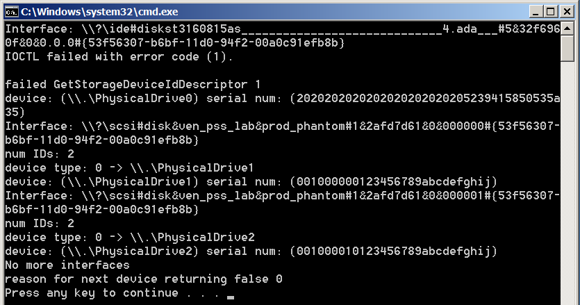

Enumerating and locating specific attach storage devices. (CppStorageEnum)
Enumerating and locating specific attach storage devices. (CppStorageEnum)
Introduction
The code sample demonstrates the use of DeviceIoControl and SetupDiGetClassDevs in the everyday operations of enumerating and locating specific attach storage devices.
Prerequisite
To run this sample, you need to install the Windows Driver Kit (WDK).
Building the Sample
Before building this sample, you should configure your Visual Studio environment. Go to project "CppStorageEnumDll" property pages, add WinDDk Include/Library paths like below:

Please NOTE:
- Make sure the WinDDK include paths are behind the $(VCInstallDir)include. Otherwise, you may encounter some errors while compiling the sample.
- If you want to build this sample targets to platform x64, please set the 64bit WDK library path. Such as: D:\WinDDK\7600.16385.1\lib\win7\amd64
- Choose the right WinDDK library based on your system.
Running the Sample
After building the sample successfully, just press Ctrl + F5 to run it. Then you may see something like this:

Please note that, for non-SCSI devices, the GetStorageDeviceIdDescriptor function failed to get the device ID. Since this code sample fetches the device ID for disks using mode page 83h, it’s meant for SCSI devices.
Using the Code
The main usage of the demo is through the client application (CppStorageEnum). As you can see, this module is only about 64 lines total, mainly using the APIs:
FindFirstStorageDevice and FindNextStorageDevice
The type of storage located is defined in the header: CppStorageEnumDll.h, the following code snippet shows how it works:
BOOL WINAPI FindFirstStorageDevice(
HANDLE *hIntDevInfo,
LPGUID DeviceClassGuid,
LPTSTR lpszDeviceName,
DWORD cchNameBufferLength,
LPTSTR lpszSerialNumber,
DWORD cchSerialNumberBufferLength
)
{
BOOL status = TRUE;
HANDLE lhIntDevInfo = NULL;
if (NULL == hIntDevInfo && NULL == *hIntDevInfo)
{
SetLastError(ERROR_INVALID_PARAMETER);
return FALSE;
}
if (NULL == lpszDeviceName || NULL == lpszSerialNumber)
{
SetLastError(ERROR_INVALID_PARAMETER);
return FALSE;
}
if (0 == cchNameBufferLength || 0 == cchSerialNumberBufferLength)
{
SetLastError(ERROR_INVALID_PARAMETER);
return FALSE;
}
lhIntDevInfo = SetupDiGetClassDevs (
(LPGUID)DeviceClassGuid,
NULL, // Enumerator
NULL, // Parent Window
(DIGCF_PRESENT | DIGCF_INTERFACEDEVICE // Only Devices present & Interface class
));
if( lhIntDevInfo == INVALID_HANDLE_VALUE )
{
// ERROR_INVALID_HANDLE
return FALSE;
}
index = 0;
status = GetDeviceProperty(lhIntDevInfo, DeviceClassGuid, index, lpszDeviceName, cchNameBufferLength, lpszSerialNumber, cchSerialNumberBufferLength);
if (status == FALSE)
{
// ERROR_NO_MORE_ITEMS
SetupDiDestroyDeviceInfoList(lhIntDevInfo);
}
*hIntDevInfo = lhIntDevInfo;
return status;
}
BOOL WINAPI FindFirstStorageDevice( HANDLE *hIntDevInfo, LPGUID DeviceClassGuid, LPTSTR lpszDeviceName, DWORD cchNameBufferLength, LPTSTR lpszSerialNumber, DWORD cchSerialNumberBufferLength ) { BOOL status = TRUE; HANDLE lhIntDevInfo = NULL; if (NULL == hIntDevInfo && NULL == *hIntDevInfo) { SetLastError(ERROR_INVALID_PARAMETER); return FALSE; } if (NULL == lpszDeviceName || NULL == lpszSerialNumber) { SetLastError(ERROR_INVALID_PARAMETER); return FALSE; } if (0 == cchNameBufferLength || 0 == cchSerialNumberBufferLength) { SetLastError(ERROR_INVALID_PARAMETER); return FALSE; } lhIntDevInfo = SetupDiGetClassDevs ( (LPGUID)DeviceClassGuid, NULL, // Enumerator NULL, // Parent Window (DIGCF_PRESENT | DIGCF_INTERFACEDEVICE // Only Devices present & Interface class )); if( lhIntDevInfo == INVALID_HANDLE_VALUE ) { // ERROR_INVALID_HANDLEreturn FALSE; } index = 0; status = GetDeviceProperty(lhIntDevInfo, DeviceClassGuid, index, lpszDeviceName, cchNameBufferLength, lpszSerialNumber, cchSerialNumberBufferLength); if (status == FALSE) { // ERROR_NO_MORE_ITEMS SetupDiDestroyDeviceInfoList(lhIntDevInfo); } *hIntDevInfo = lhIntDevInfo; return status; }
Basically, FindFirstStorageDevice calls SetupDiGetClassDevs to get a handle to the interface class and attempts to locate the first instance of the class using SetupDiEnumDeviceInterfaces and SetupDiGetDeviceInterfaceDetail. Once the first device has been identified, which is controlled by the ordinal (Index - a global variable that is maintained across DLL/API invocations), calls to DeviceIoControl are made to gather detail information about the device. Currently, the IOCTLs implemented are IOCTL_STORAGE_QUERY_PROPERTY and IOCTL_STORAGE_GET_DEVICE_NUMBER.
Once the interface has been obtained and properties for the interface are complete, string is compiled to create a NT-like namespace of the device. Currently, only DISK devices and TAPE devices are supported, but again this is left to the user to extend to any device desired.
Note this API requires a pointer to a handle to be used by subsequent calls FindNextStorageDevice. The next argument is the GUID, which specifies the type of device to be enumerated. These GUIDS can be found in devguid.h, and are also defined at:
http://msdn.microsoft.com/en-us/library/windows/hardware/ff545824(v=vs.85).aspx
The remaining arguments are buffers and lengths to be allocated and managed by the client application, not the DLL. It is an error to provide NULL or zero for these arguments respectively.
Once FindFirstStorageDevice has been called, and returned TRUE, the hIntDevInfo, can then be used to call FindNextStorageDevice repetitively, until FALSE is returned.
BOOL WINAPI FindNextStorageDevice(
HANDLE hIntDevInfo,
LPGUID DeviceClassGuid,
LPTSTR lpszDeviceName,
DWORD cchNameBufferLength,
LPTSTR lpszSerialNumber,
DWORD cchSerialNumberBufferLength
)
{
BOOL bRes;
index++;
bRes = GetDeviceProperty(hIntDevInfo, DeviceClassGuid, index, lpszDeviceName, cchNameBufferLength, lpszSerialNumber, cchSerialNumberBufferLength);
if (bRes == FALSE)
{
// ERROR_NO_MORE_ITEMS
SetupDiDestroyDeviceInfoList(hIntDevInfo);
}
return bRes;
}
BOOL WINAPI FindNextStorageDevice( HANDLE hIntDevInfo, LPGUID DeviceClassGuid, LPTSTR lpszDeviceName, DWORD cchNameBufferLength, LPTSTR lpszSerialNumber, DWORD cchSerialNumberBufferLength ) { BOOL bRes; index++; bRes = GetDeviceProperty(hIntDevInfo, DeviceClassGuid, index, lpszDeviceName, cchNameBufferLength, lpszSerialNumber, cchSerialNumberBufferLength); if (bRes == FALSE) { // ERROR_NO_MORE_ITEMS SetupDiDestroyDeviceInfoList(hIntDevInfo); } return bRes; }
More Information
The location for information SetupAPI is:
http://msdn.microsoft.com/en-us/library/windows/hardware/ff551015(v=vs.85).aspx
Information on device specific GUIDS can be found at:
http://msdn.microsoft.com/en-us/library/windows/hardware/ff545824(v=vs.85).aspx